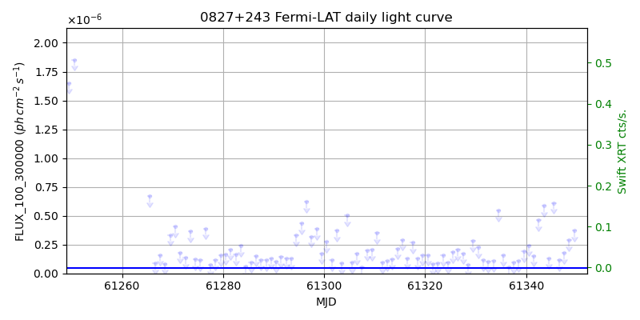
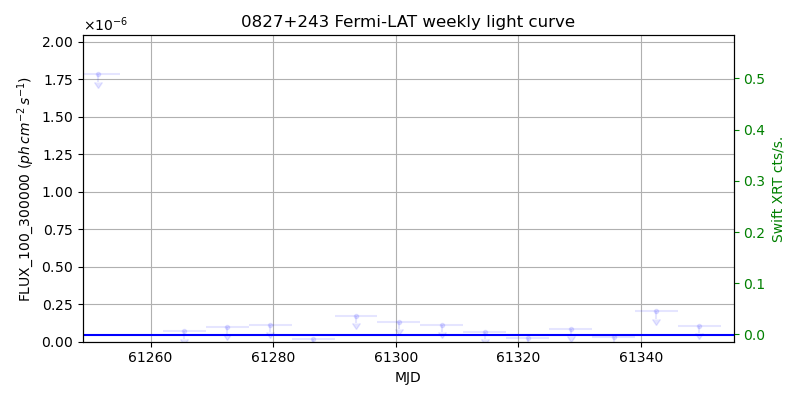
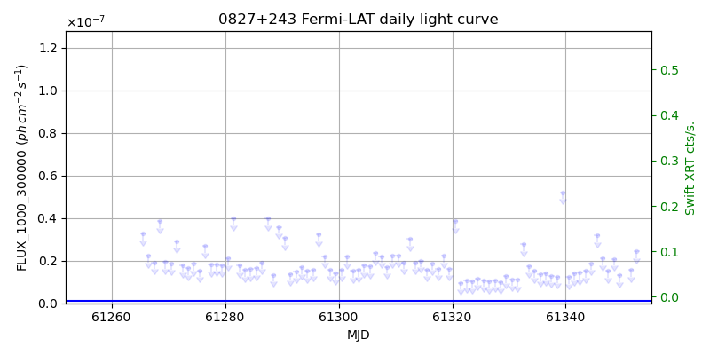
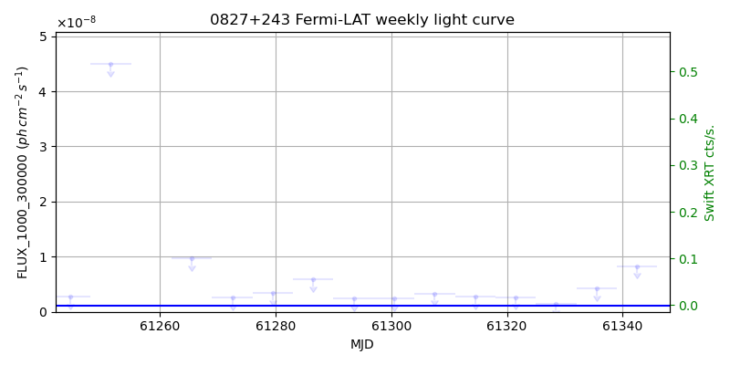

LAT Lightcurve site: https://fermi.gsfc.nasa.gov/ssc/data/access/lat/msl_lc/source/0827p243
Swift site: https://www.swift.psu.edu/monitoring/source.php?source=QSOB0827+243
NED: Query
Time of last update of this page: UT: 2026-11-06 16:19 (MJD: 61350.680)
| Property | Value |
|---|---|
| R.A. | 8:29:57.60 |
| Dec. | 24:13:12.0 |
| z | 0.939 |
| 3FGL SpectrumType | PowerLaw |
| 3FGL PL Index | 2.63 |
| 3FGL Flux_100_300000 | 4.63e-08 1 / (s cm2) |
| 3FGL Flux_1000_300000 | 1.09e-09 1 / (s cm2) |
| 3FGL Flux >200 GeV | 1.97e-13 1 / (s cm2) |
| 3FGL Extrap. Crab >200 GeV | 0.00 |
| 3FGL Flux After EBL Absorption >200GeV | 4.48e-15 1 / (s cm2) |
| 3FGL EBL Crab Fraction >200GeV | 0.00 |

| MJD | dMJD | Flux | dFlux | Frac3FGL | FracCrab>200GeV | EBLFracCrab>200GeV |
|---|---|---|---|---|---|---|
| 61345.50 | 0.50 | 6.11e-07 | 0.00e+00 | 0.00 | 0.00 | 0.00 |
| 61346.50 | 0.50 | 1.14e-07 | 0.00e+00 | 0.00 | 0.00 | 0.00 |
| 61347.50 | 0.50 | 1.76e-07 | 0.00e+00 | 0.00 | 0.00 | 0.00 |
| 61348.50 | 0.50 | 2.86e-07 | 0.00e+00 | 0.00 | 0.00 | 0.00 |
| 61349.50 | 0.50 | 3.70e-07 | 0.00e+00 | 0.00 | 0.00 | 0.00 |

| MJD | dMJD | Flux | dFlux | Frac3FGL | FracCrab>200GeV | EBLFracCrab>200GeV |
|---|---|---|---|---|---|---|
| 61314.50 | 3.50 | 6.73e-08 | 0.00e+00 | 0.00 | 0.00 | 0.00 |
| 61321.50 | 3.50 | 2.44e-08 | 0.00e+00 | 0.00 | 0.00 | 0.00 |
| 61328.50 | 3.50 | 8.61e-08 | 0.00e+00 | 0.00 | 0.00 | 0.00 |
| 61335.50 | 3.50 | 3.17e-08 | 0.00e+00 | 0.00 | 0.00 | 0.00 |
| 61342.50 | 3.50 | 2.04e-07 | 0.00e+00 | 0.00 | 0.00 | 0.00 |

| MJD | dMJD | Flux | dFlux | Frac3FGL | FracCrab>200GeV | EBLFracCrab>200GeV |
|---|---|---|---|---|---|---|
| 61345.50 | 0.50 | 3.20e-08 | 0.00e+00 | 0.00 | 0.00 | 0.00 |
| 61346.50 | 0.50 | 2.12e-08 | 0.00e+00 | 0.00 | 0.00 | 0.00 |
| 61347.50 | 0.50 | 1.52e-08 | 0.00e+00 | 0.00 | 0.00 | 0.00 |
| 61348.50 | 0.50 | 2.08e-08 | 0.00e+00 | 0.00 | 0.00 | 0.00 |
| 61349.50 | 0.50 | 1.31e-08 | 0.00e+00 | 0.00 | 0.00 | 0.00 |

| MJD | dMJD | Flux | dFlux | Frac3FGL | FracCrab>200GeV | EBLFracCrab>200GeV |
|---|---|---|---|---|---|---|
| 61314.50 | 3.50 | 2.74e-09 | 0.00e+00 | 0.00 | 0.00 | 0.00 |
| 61321.50 | 3.50 | 2.64e-09 | 0.00e+00 | 0.00 | 0.00 | 0.00 |
| 61328.50 | 3.50 | 1.49e-09 | 0.00e+00 | 0.00 | 0.00 | 0.00 |
| 61335.50 | 3.50 | 4.25e-09 | 0.00e+00 | 0.00 | 0.00 | 0.00 |
| 61342.50 | 3.50 | 8.30e-09 | 0.00e+00 | 0.00 | 0.00 | 0.00 |
--------------------------------------------------------- Using user-supplied coords: 8:29:57.60 24:13:12.0 2000 --------------------------------------------------------- FLWO UT night of: 2026-11-07 Local Sid. @ Midnight: 02:42 Sunset (-15.0) (local, UT): 18:39 01:39 Sunrise (-15.0) (local, UT): 05:36 12:36 Moonrise (local, UT): 05:16 12:16 Moonset (local, UT): Moon phase: 0.04 --------------------------------------------------------- AzTime LSID UT Obj_el Obj_az Mn_el Mn_az Sep. --------------------------------------------------------- 18:39 21:20 01:39 -33.0 13.3 -35.5 278.9 74.7 19:09 21:50 02:09 -31.1 21.1 -41.6 283.5 75.0 19:39 22:20 02:39 -28.4 28.3 -47.5 288.8 75.3 20:09 22:50 03:09 -25.1 35.0 -53.3 295.3 75.7 20:39 23:20 03:39 -21.1 41.1 -58.7 303.4 76.0 21:09 23:50 04:09 -16.7 46.7 -63.5 313.9 76.3 21:39 00:20 04:39 -11.8 51.7 -67.5 328.0 76.7 22:09 00:50 05:09 -6.6 56.3 -70.0 346.2 77.0 22:39 01:20 05:39 -0.5 60.4 -70.5 6.9 77.4 23:09 01:51 06:09 4.6 64.3 -68.8 26.6 77.7 23:39 02:21 06:39 10.4 67.9 -65.4 42.5 78.1 00:09 02:51 07:09 16.4 71.3 -60.9 54.4 78.4 00:39 03:21 07:39 22.5 74.6 -55.8 63.5 78.8 01:09 03:51 08:09 28.7 77.9 -50.2 70.6 79.1 01:39 04:21 08:39 35.0 81.1 -44.4 76.4 79.5 02:09 04:51 09:09 41.3 84.4 -38.4 81.4 79.8 02:39 05:21 09:39 47.7 87.9 -32.4 85.8 80.1 03:09 05:51 10:09 54.1 91.9 -26.3 89.9 80.4 03:39 06:21 10:39 60.5 96.6 -20.2 93.7 80.7 04:09 06:51 11:09 66.8 102.7 -14.2 97.5 81.0 04:39 07:21 11:39 72.9 111.8 -8.1 101.2 81.3 05:09 07:52 12:09 78.5 128.4 -1.2 105.0 81.6 05:36 08:19 12:36 82.0 159.7 3.4 108.6 81.8 --------------------------------------------------------- Dark hours >55 deg.: 2.04 srcstart (UT): 2026-11-07 10:13 srcend (UT): 2026-11-07 12:15